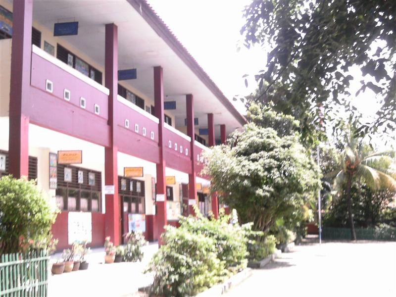

Mewujudkan Generasi Cerdas & Berkarakter
Selamat Datang di UPT Satuan Pendidikan SDN Sukasari 7 Kota Tangerang. Lingkungan belajar yang inklusif, ramah anak, berwawasan lingkungan, serta berbasis teknologi Kurikulum Merdeka.

UPT SP SDN Sukasari 7
Jl. Kasasi Raya No. 1, Kel. Sukasari, Kec. Tangerang

Hj. Siti Nurhasanah, M.Pd.
Kepala Sekolah SDN Sukasari 7Membimbing Potensi, Membentuk Karakter Masa Depan
"Selamat datang di website resmi SDN Sukasari 7 Kota Tangerang. Kami berkomitmen menyelenggarakan pendidikan dasar yang berkarakter, kreatif, berwawasan lingkungan, serta adaptif terhadap perkembangan teknologi guna mencetak generasi unggul yang beriman dan bertakwim."
Profil SDN Sukasari 7 Kota Tangerang
Mengenal lebih dekat sejarah, filosofi pendidikan, serta fasilitas pendukung pembelajaran siswa-siswi kami.
Visi Sekolah
"Terwujudnya Peserta Didik yang Beriman dan Bertakwa, Berkarakter Pancasila, Berprestasi Akademik dan Non-Akademik, serta Berbudaya Lingkungan."
Misi Utama
- Menanamkan nilai pembiasaan ibadah dan budi pekerti luhur.
- Melaksanakan pembelajaran Kurikulum Merdeka yang berbasis projek.
- Mengembangkan bakat seni, olahraga, dan sains siswa.
- Menciptakan lingkungan sekolah hijau, bersih, dan bebas sampah.
Fasilitas Unggulan
Guru & Staf Kependidikan
Tim pendidik profesional yang berdedikasi membimbing putra-putri Anda.
Berita & Agenda Sekolah
Informasi kegiatan, pengumuman resmi, dan dokumentasi program SDN Sukasari 7.
Etalase Prestasi Siswa
Kebanggaan keluarga besar SDN Sukasari 7 atas raihan juara di berbagai kejuaraan sains, olahraga, dan seni.
Siap Bergabung dengan Keluarga Besar SDN Sukasari 7?
Proses pendaftaran PPDB SDN Sukasari 7 Kota Tangerang dilaksanakan secara terintegrasi melalui portal resmi Dinas Pendidikan Kota Tangerang dengan transparansi penuh pada jalur Zonasi, Afirmasi, dan Perpindahan Orang Tua.
Persyaratan Berkas Pendaftaran:
Jalur Pendaftaran Resmi
Diperuntukkan bagi calon peserta didik yang berdomisili dekat lokasi SDN Sukasari 7 berdasarkan kelurahan/kecamatan.
Diperuntukkan bagi peserta didik dari keluarga ekonomi tidak mampu (terdaftar KIP/DTKS).
Melampirkan surat penugasan resmi dari instansi/perusahaan tempat orang tua bekerja.
Buku Tamu & Peta Lokasi
Kirimkan pesan, pertanyaan, atau permohonan kunjungan Anda secara langsung ke Layanan TU Sekolah.
Formulir Buku Tamu Digital
Isi formulir berikut untuk mendapatkan No. Tiket Konfirmasi dari Tata Usaha.
Peta Lokasi Sekolah
Jl. Kasasi Raya No. 1, Kel. Sukasari, Kec. Tangerang, Kota Tangerang
Senin - Jumat (07.00 - 15.00 WIB)
Dekat dengan Pusat Kota Tangerang